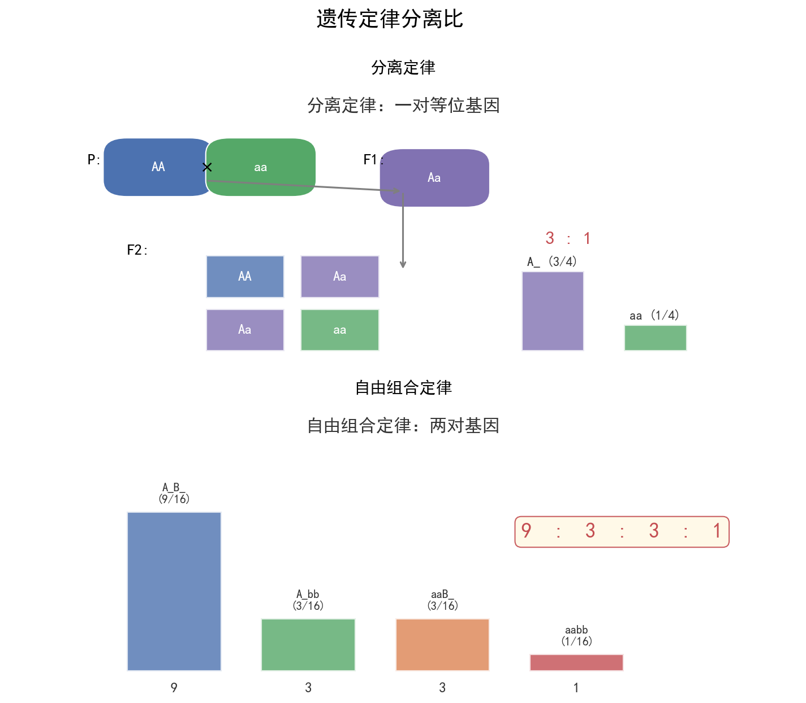

| 字段 | 内容 |
|---|---|
| 来源 | 人教版必修第二册 / 2023-2025广东选择性考试·生物遗传专题 |
| 时间标签 | #高一筑基 |
| 难度 | ★★★★☆ |
| 状态 | ⚠️待强化 |
##### 分离定律（一对相对性状）
实验：高茎 × 矮茎 → F₁全高茎 → F₂ 3高:1矮
核心内容：
- F₁为杂合子（Dd），表现显性性状
- F₁形成配子时，D和d分离，比例1:1
- F₂基因型：1DD:2Dd:1dd；表现型：3高:1矮
验证方法：测交（Dd × dd）→ 1高:1矮，证明F₁产生两种配子且比例为1:1
适用条件：一对等位基因，细胞核遗传，有性生殖，子代数量足够多
##### 自由组合定律（两对及以上相对性状）
实验：黄圆 × 绿皱 → F₁全黄圆 → F₂ 9黄圆:3黄皱:3绿圆:1绿皱
核心内容：
- F₁为双杂合子（YyRr）
- F₁形成配子时，Y/y分离，R/r分离，同时非同源染色体上的基因自由组合
- F₁产生配子：YR:Yr:yR:yr = 1:1:1:1
- F₂基因型：9种；表现型：4种，比例9:3:3:1
验证方法：测交（YyRr × yyrr）→ 1:1:1:1，证明F₁产生四种配子
适用条件：非同源染色体上的非等位基因，独立遗传| 交配类型 | 基因型比例 | 表现型比例 | 应用 |
|---|---|---|---|
| Aa × Aa | 1:2:1 | 3:1 | 自交，验证分离定律 |
| Aa × aa | 1:1 | 1:1 | 测交，判断基因型 |
| Aa × AA | 1:1 | 全显 | 判断显性纯合/杂合 |
| AaBb × AaBb | 1:2:1:2:4:2:1:2:1 | 9:3:3:1 | 双杂合自交 |
| AaBb × aabb | 1:1:1:1 | 1:1:1:1 | 双杂合测交 |
| AaBb × Aabb | 复杂 | 复杂 | 拆分法：分别算每对，再相乘 |
比例变式（基因互作）：
- 9:7（互补作用）、9:3:4（隐性上位）、9:6:1（累加作用）、12:3:1（显性上位）、15:1（重叠作用）、13:3（抑制作用）
| 类型 | 典型疾病 | 遗传特点 | 判断口诀 |
|---|---|---|---|
| X染色体隐性 | 红绿色盲、血友病 | 男性患者多，交叉遗传，母病子必病 | 无中生有为隐性，隐性看女病，女病父正非伴性 |
| X染色体显性 | 抗维生素D佝偻病 | 女性患者多，世代连续，父病女必病 | 有中生无为显性，显性看男病，男病母正非伴性 |
| Y染色体 | 外耳道多毛症 | 限雄遗传，父传子、子传孙 | 只在男性中传递 |
遗传系谱图判断步骤：
- 判断显隐性："无中生有为隐性，有中生无为显性"
- 判断位置：隐性看女病（父正/子正→常隐；父病/子病→伴X隐）；显性看男病（母正/女正→常显；母病/女病→伴X显）
- 写出基因型，计算概率
##### 拆分法（分步乘法）
适用于独立遗传的多对基因：
分别计算每对基因的概率，再相乘
例：AaBb × Aabb
Aa × Aa → 3/4显 : 1/4隐
Bb × bb → 1/2显 : 1/2隐
双显 = 3/4 × 1/2 = 3/8
双隐 = 1/4 × 1/2 = 1/8##### 配子法
先求亲本产生配子的种类和比例，再用棋盘法或分支法组合
适用于基因型不确定、需要枚举的情况| 陷阱 | 正确理解 |
|---|---|
| 患病男孩 vs 男孩患病 | 患病男孩 = 患病概率 × 1/2；男孩患病 = 在男孩中患病的概率 |
| 自交 vs 自由交配 | 自交是基因型相同交配；自由交配用基因频率计算（哈迪-温伯格） |
| 纯合子概率 | 显性个体中纯合子概率 = 1/3（Aa自交后代中） |
| 致死效应 | 注意显性/隐性致死对比例的影响（如AA致死，则Aa自交后代为2:1） |
分离定律口诀：同源染色体分离，等位基因分开，配子比例一比一。自由组合口诀：非同源染色体自由组合，非等位基因自由组合，配子四种一比一比一比一。
显隐判断口诀：无中生有为隐性，有中生无为显性。
位置判断口诀：隐性看女病，父正子正非伴性；显性看男病，母正女正非伴性。
概率计算口诀：独立遗传拆分法，分别计算再相乘；连锁遗传要配子，棋盘法来帮忙。
广东情境提示：广东卷遗传题常以广东本地生物为情境（如荔枝遗传育种、水稻杂交、地中海贫血病调查），注意从情境中提取遗传方式和计算要求。